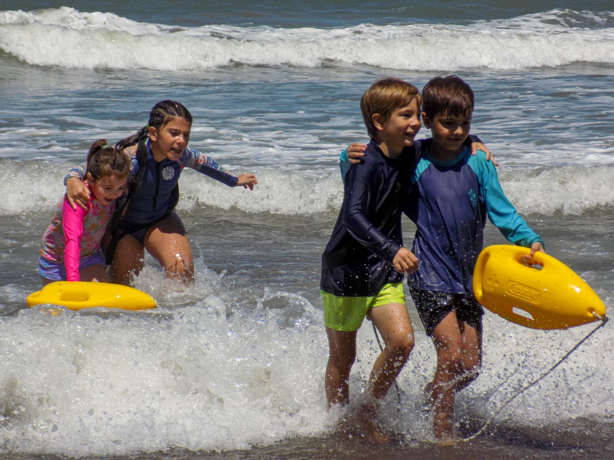

Escuelita · 5 a 7 años
DESCUBRIR EL MAR JUGANDO.
Juego, exploración, primeras nociones de seguridad, actividades con tablas, conocimiento del ambiente y cuidado.
Escuela de Mar · Temporada 2026/2027
Experiencias en el mar y la naturaleza para chicos y chicas de 5 a 17 años.
Una propuesta para aprender, jugar, moverse, descubrir y vincularse con el mar desde el conocimiento, la confianza y el cuidado.
Inscribite5 a 17 años
Lunes a viernes
9:30 a 12:30 hs
Diciembre a marzo
Escuelita · 5 a 7 años
Juego, exploración, primeras nociones de seguridad, actividades con tablas, conocimiento del ambiente y cuidado.
Pre-Salvamento · 8 a 11 años
Mayor autonomía, actividades en el mar, preparación física, tablas, iniciación al salvamento y conocimiento del ambiente marítimo.
Salvamento Junior · 12 a 17 años
Natación, preparación física, técnicas de salvamento, actividades con tablas, prevención, RCP y conocimiento del ambiente.
Encuentro → Movimiento → Mar → Aprendizaje → Encuentro.
Cada jornada se construye a partir del grupo, las condiciones del día y lo que el mar nos propone.
Porque ningún día en el mar es exactamente igual a otro.
Una jornada para conocer y vivir la experiencia de Escuela de Mar.
Participación durante una semana.
Dos semanas para darle continuidad a la experiencia.
Una experiencia sostenida para aprender, ganar confianza y seguir creciendo.
Y, sobre todo, ganas de aprender, jugar y disfrutar del mar.
Las actividades se adaptan a las edades, experiencias y posibilidades de cada grupo. En Escuelita no es necesario saber nadar aún, pero para participar en los grupos Pre-Salvamento y Salvamento Junior el requisito es saber nadar crol.
El mar y las condiciones meteorológicas se observan todos los días. Las actividades se adaptan en función de las condiciones y de la seguridad del grupo.
Aprender cuándo entrar al mar y cuándo no hacerlo también es parte de Escuela de Mar.
No necesariamente. El mar es parte de nuestra escuela, pero cada jornada puede ser diferente. Las condiciones del día, los objetivos de la actividad y las características del grupo determinan qué experiencias realizamos.
Sí. Podés elegir entre las modalidades Día, Semana, Quincena o Mes, de acuerdo con la disponibilidad de cada período.
TEMPORADA 2026/2027
Diciembre a marzo · 5 a 17 años · Monte Hermoso
Quiero inscribirme →